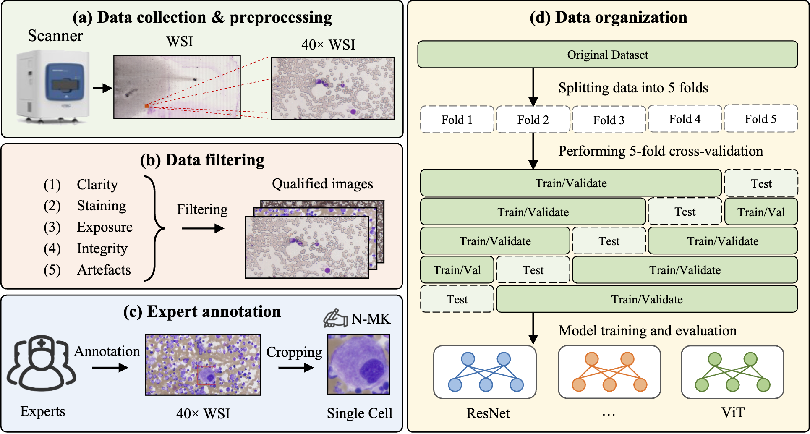

Biography
I'm a 4th-year undergraduate in Software Engineering at Xinjiang University (XJU) (新疆大学). In 2026, I will join the Institute of Basic Medical Sciences (IBMS), Chinese Academy of Medical Sciences & Peking Union Medical College (CAMS/PUMC) (中国医学科学院基础医学研究所 & 北京协和医学院(清华大学医学部)), advised by Prof. Yang Chen. My research interests span Medical AI and Embodied Intelligence.
Previously, I worked as a research intern at Xi'an Jiaotong University (XJTU) (西安交通大学), advised by Prof. Zhongyu Li, working with Xingyue Zhao and Prof. Zhiping Jiang (Xiangya Hospital, CSU 中南大学湘雅医院); and at Wuhan University (WHU) (武汉大学), working with Haoyu Zhao, in collaboration with Alibaba DAMO Academy (阿里巴巴达摩院). I am currently a research intern at the Institute of Automation, Chinese Academy of Sciences (CASIA) (中国科学院自动化研究所), advised by Prof. Bo Xu, working on multimodal large models.
I'm open to collaboration—feel free to reach me by e-mail.
News
Selected Publications

Scientific Data AAAI 2026
AAAI 2026
 AAAI 2026
AAAI 2026
 Preprint
Preprint
 Preprint
Preprint
 EMBC 2025
EMBC 2025
Experience

Working on multimodal large models for vision-language tasks.

Working on embodied intelligence and robotic manipulation.

Self-supervised learning methods for medical image analysis.
Awards
2024 CCPC 全国邀请赛
2024 CCPC 全国邀请赛
2024 ACM-ICPC 亚洲区域赛
2024 CCPC 全国区域赛
2024 ACM-ICPC 新疆省赛
2023 全国大学生数学建模竞赛